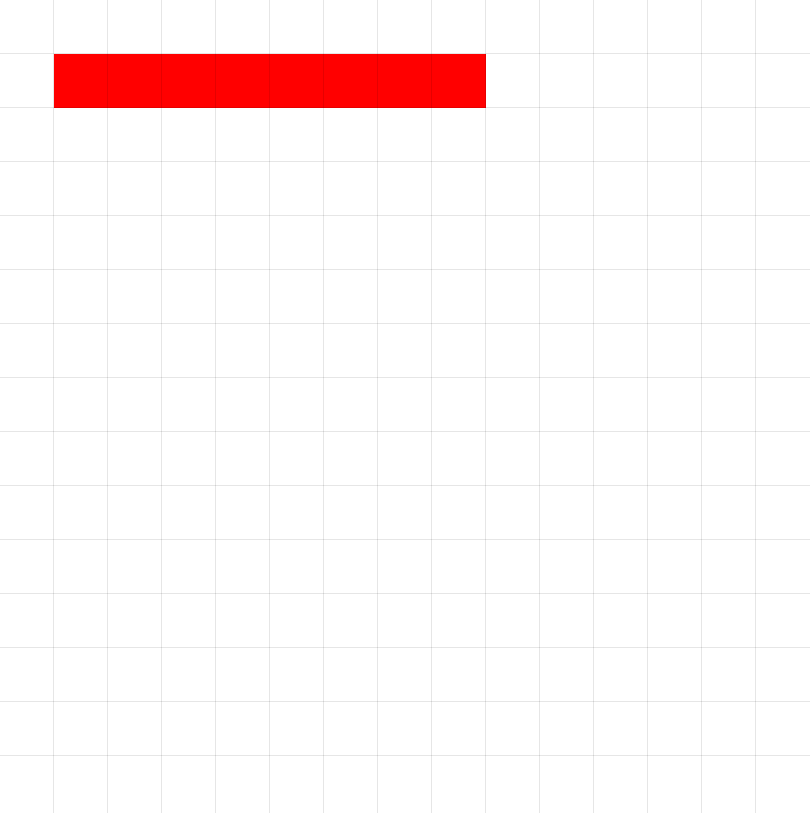
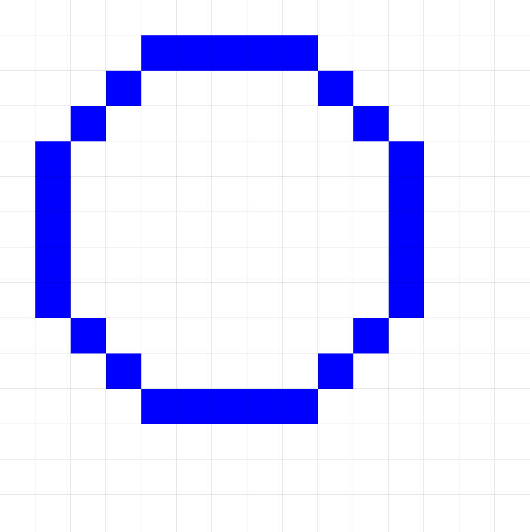
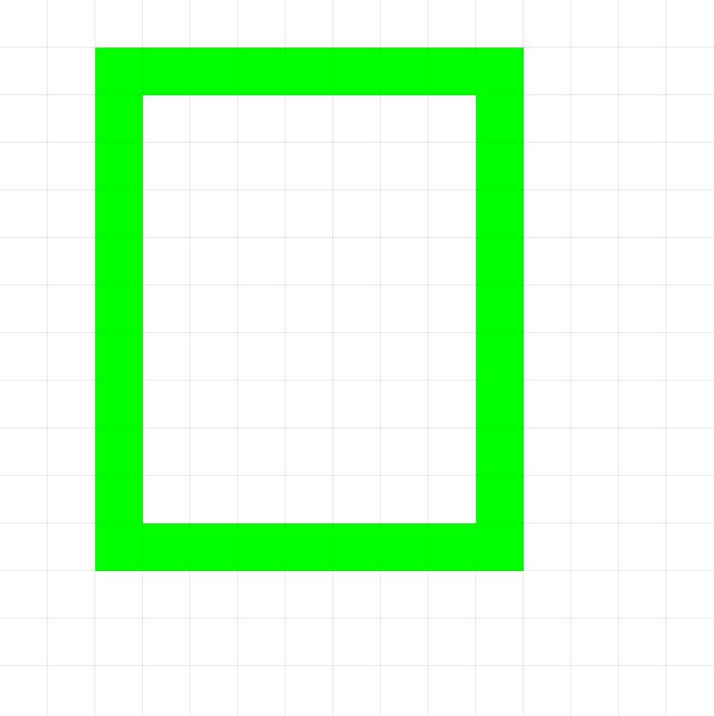
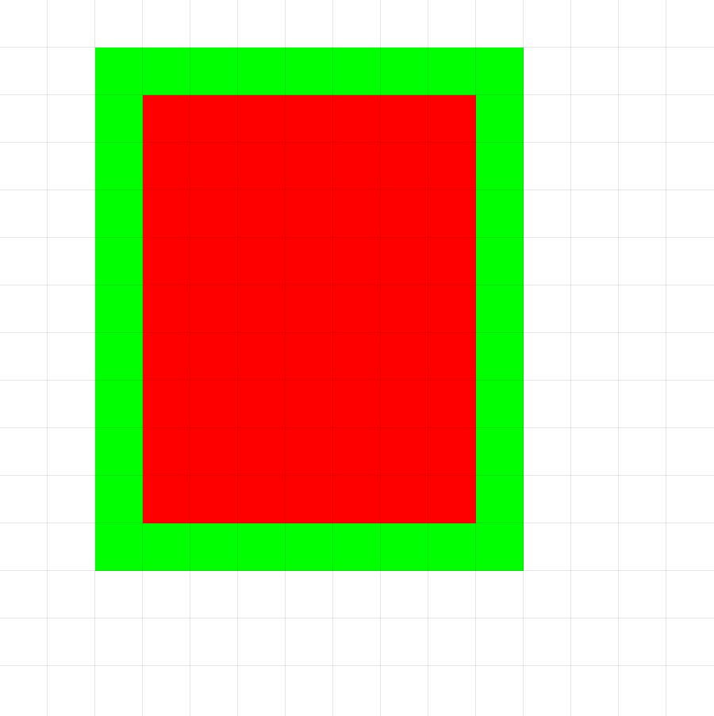
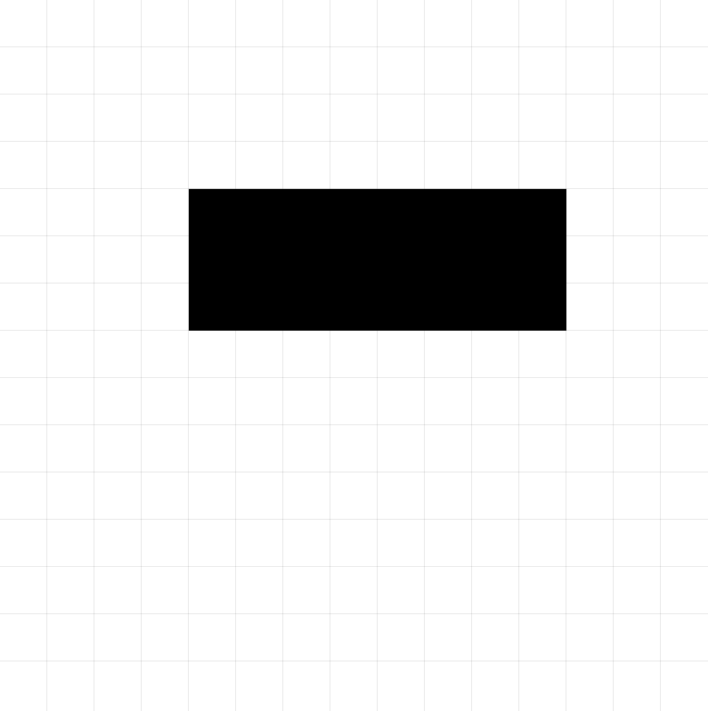

Comandos y Funciones
Esta sección detalla las acciones que puedes programar en pixelWallE. Los comandos son las instrucciones principales para dibujar y manipular el lienzo, mientras que las funciones te permiten obtener información sobre el estado del editor o el contenido del lienzo.
Comandos
Los comandos son sentencias ejecutables que realizan una acción, como dibujar una forma, cambiar el color de la brocha o mover un punto de referencia. No devuelven un valor directamente y se usan como líneas de código independientes.
Spawn(x, y)
Inicializa al robot en el canvas en la posición (x, y). Las coordenadas son relativas a la esquina superior izquierda del lienzo (0,0).
x(Número): Coordenada X del píxel.y(Número): Coordenada Y del píxel.
Spawn(10, 15)
Spawn(0, 0)
DrawLine(x, y, distance)
Dibuja una línea recta desde el punto donde se encuentra el robot en la dirección (x1, y1) con la distancia distance dada.
x(Número): Dirección eje x.y(Número): Dirección eje y.distance(Número): Distancia de la recta.
DrawLine(1, 1, 100 ) # Dibuja una diagonal en un lienzo 100x100
DrawLine(1,0, 10) # Dibuja una línea horizontal de distancia 10
Ejemplo Visual:

DrawLine(1, 0, 8 )
DrawCircle(x, y, radius)
Dibuja un círculo con el centro en el punto que se alcanza al desplazarse en la dirección (x, y) una distancia igual al radio radius especificados.
x(Número): Dirección eje X.y(Número): Dirección eje y.radius(Número): El radio del círculo en píxeles.
DrawCircle(1,1,20) # Dibuja un círculo de radio 20
DrawCircle(0, 1, 5) # Dibuja un círculo de radio 5 con el color de brocha actual
Ejemplo Visual:

DrawCircle(1, 1, 5) # Iniciando en la posición (1,1)
DrawRectangle(x, y, deistance, width, height)
Dibuja un rectángulo sólido con su esquina superior izquierda en (x, y), con el width, height y color especificados.
x(Número): Direccón eje x.y(Número): Dirección eje y.distance(Número): Desplazamiento.width(Número): Ancho del rectángulo en píxeles.height(Número): Alto del rectángulo en píxeles.
DrawRectangle(1, 1,10, 30, 20) # Dibuja un rectángulo desplazandose en diagonal
DrawRectangle(0, 1, 5 GetCanvasSize() / 2, GetCanvasSize() / 2) # Dibuja un cuadrado
Ejemplo Visual:

DrawRectangle(1,1,5,5,6) # Iniciando en la posición (1,1)Fill()
Rellena todo el área del lienzo del mismo color que el color del pixel en el cual se encuentra el robot.
Fill()
Ejemplo Visual:

Fill() # Rellena el rect'angulo verde de color rojo
GoTo[etiqueta](Expresión booleana)
Continúa la ejecución desde la posición de la etiqueta si el argumento tiene valor de verdad true
etiqueta(Label): Referencia de la etiqueta.Expresión booleana(Bool): Expresión condicional.
label
.
.
.
GoTo[label](1>0) # Regresa a la etiqueta label
Size(size)
Establece el tamaño de la "brocha" actual. Esto puede afectar el grosor de las líneas o el tamaño de los puntos dibujados por otros comandos si el lenguaje lo soporta. SOlo admite valores impares, en caso de un número par lo convierte en el impar menor más cercano
size(Número): El nuevo tamaño o grosor. Un valor de 1 suele ser un solo píxel.
Size(3) # Establece un grosor de 3 píxeles
Color("black")
# Si DrawLine respeta el tamaño:
DrawLine(1,0,6) # Dibuja una línea negra de 3 píxeles de grosor
Ejemplo Visual:

Spawn(5,5)
Size(3)
Color("black")
DrawLine(1,0,6)
ReSpawn(x, y)
Similar a Spawn, este comando reubica el robot en las coordenadas (x, y).
x(Número): Coordenada X.y(Número): Coordenada Y.
ReSpawn(GetCanvasSize() / 2, GetCanvasSize() / 2) Reubica el robot en el centro
Color(color)
Establece el color de la "brocha" o el color actual para los comandos de dibujo ej. DrawCircle(x, y, r). Admite colores predefinidos, formato Hexagecimal y RGB
color(Cadena): El nuevo color de brocha.
Colores predefinidos
- "Red”
- "Blue"
- "Green"
- "Yellow"
- "Orange"
- "Purple"
- "Black"
- "White"
- "Transparent"
Color("green") # Establece la brocha a verde
DrawCircle(1, 1, 10) # Dibuja un círculo verde
Color("#FF00FF") # Cambia la brocha a magenta
DrawRectangle(1,0,3,5,7) # Dibuja un rectángulo magenta
Print(string)
Imprime en la consola el valor del argumento string. Admite cualquier expresión
string(Cadena): Mensaje de consola.
Print("Hello World") # Clásico mensaje de nuevo programa.
Run(path)
Ejecuta el archivo .pw ubicado en el path.
path(Cadena):Direcci'on del archivo .pw.
Run("/file/myWallE.pw") #Ejecuta el codigo de myWallE.pw.
Funciones
Las funciones son bloques de código que realizan una tarea o cálculo y devuelven un valor. Este valor puede ser utilizado en expresiones, asignado a variables o pasado como argumento a comandos o a otras funciones.
Se llaman por su nombre seguido de paréntesis (). Si requieren información para operar, esta se pasa como argumentos dentro de los paréntesis.
GetActualX()
Devuelve la coordenada X actual del punto de referencia o la "brocha" del editor.
- No toma argumentos.
- Devuelve: Número.
currentX <- GetActualX()
DrawLine(1, 0, GetActualX()) # Dibuja una linea de la distancia de la posición X actual
GetActualY()
Devuelve la coordenada Y actual del punto de referencia o la "brocha" del editor.
- No toma argumentos.
- Devuelve: Número.
currentY <- GetActualY()
GoTo[label](GetActualY() < 20) #Va al label si la posición Y es menor que 20
GetCanvasSize()
Devuelve el tamaño del lienzo.
- No toma argumentos.
- Devuelve: Número.
size <- GetCanvasSize()
DrawRectangle(0, 1, GetCanvasSize(), GetCanvasSize(), 3) # Dibuja un rectangulo del ancho del canvas
GetColorCount(color, x, y, x2, y2)
Cuenta cuántos píxeles dentro de un área rectangular especificada tienen el color exacto dado.
color(Cadena): El color a buscar.x(Número): Coordenada X de la esquina superior izquierda del área de búsqueda.y(Número): Coordenada Y de la esquina superior izquierda del área de búsqueda.x2(Número): Coordenada X de la esquina inferior derecha del área de búsqueda.y2(Número): Coordenada Y de la esquina inferior derecha del área de búsqueda.- Devuelve: Número entero (la cantidad de píxeles encontrados).
numRedPixels <- GetColorCount("red", 0, 0, 100, 100) # Cuenta píxeles rojos en todo un lienzo 100x100
numBlueArea <- GetColorCount("blue", 10, 10, 30, 30) # Cuenta píxeles azules en un área específica
IsBrushColor(color)
Verifica si el color de brocha actual es igual al color especificado.
color(Cadena): El color con el que comparar.- Devuelve: Booleano (
truesi coinciden,falsesi no).
GoTo[label](IsBrushColor("blue"))
# Solo se ejecuta si la brocha es azul
IsBrushSize(size)
Verifica si el tamaño de brocha actual es igual al size especificado.
size(Número): El tamaño con el que comparar.- Devuelve: Booleano.
isSize5 <- IsBrushSize(5) # isSize5 será true o false
IsCanvasColor(color, y, x)
Verifica si el píxel obtenido de sumar x y y a la posición actual tiene el color especificado.
color(Cadena): El color a verificar.y(Número): Desplazamiento vertical.x(Número): Desplazamiento horizontal.- Devuelve: Booleano.
isWhite<- IsCanvasColor("white") #Guarda true o false
Variables
Puedes declarar variables para almacenar valores (números, cadenas, booleanos, listas) y reutilizarlos a lo largo de tu script. Se declaran usando un identificador (nombre de la variable) y se les asigna un valor inicial usando el operador <- .
myNumber <- 10
message <- "Drawing complete!"
isDone <- true
myColors <- ["red", "green"] # Declarando con un literal de lista
# Puedes reasignar variables
myNumber <- myNumber + 5 # myNumber ahora vale 15
message <- "Updated " + message
El tipo de una variable se determina por el valor que se le asigna inicialmente. Las variables de lista requieren la sintaxis especificada anteriormente.
Las variables pueden ser usadas en cualquier lugar donde se espere una expresión del tipo correspondiente.
Etiquetas
Las etiquetas marcan puntos específicos en tu código a los que puedes saltar usando la sentencia GoTo. Una etiqueta consiste en un identificador seguido de una expresión boolena.
# Inicio del script
Spawn(0,0)
Color("black")
Setup # Esto es una etiqueta
Fill()
DrawCircle(1,1,4)
Color("red")
GoTo[Setup](true)
DrawLoop # Otra etiqueta, quizás para un bucle
# Código de dibujo repetitivo aquí
# ...
# Si se cumple una condición, salta a otra etiqueta
EndScript # Etiqueta para finalizar
# Código de limpieza o finalización
Fill()